常世界
网与常世界
国民的意识接入高度网格化的常世界，起居、竞技、任务都在网内完成。「乘异里」是网中的一处地名，也是你要踏进去的那片场地。

乘异里 CHENGYILI v0.2.66在常世界的全球据点上布防，遥控租赁而来的机体实时出战；打竞技排位、抢据点、谈租约，用战绩换取更高的存在价值。
母星早已把人类划进养殖计划，一部分人不肯被养，于是有了大分裂。此后他们活在「网」里，把身体留在营养仓，用机械出门。以下设定对应 v0.2.66 版本内容。
国民的意识接入高度网格化的常世界，起居、竞技、任务都在网内完成。「乘异里」是网中的一处地名，也是你要踏进去的那片场地。
大分裂后抵制的那个叛逆国度。它主动放弃长生、拒绝人类养殖，代价是人口锐减——国家运转全靠国民把大脑算力租出来。
PeaceLives 子民繁衍的子嗣，经重生院「抚平大脑褶皱」重构记忆后出生。没有固定宿舍，自己租；本体躺在营养仓里。你是众多机体研发者之一：向其他研发者租赁角色机体出战，也可自行研发机体供他人租赁。这类从别人手里租来的机体，统称「雇员」。
算力租给国家，国家按你的「存在价值」回拨配额。研发机体供人租赁 / 租赁机体出战 → 赢 → 存在价值上升 → 算力配额提高 → 更好的装备与权限 → 再研发更强的机体。
白夜旅：地下魔都，魔王阿诺暮坐镇。
复安：睡童·女大陆，中世纪战乱未平。
和平：异常灾害联合研究所与对策局。
腐化：军事区，把国民推进矿化当作晶体提取与活体武器。
铪码勒柯钯斯晶体替代生物分子键，72 小时后不可逆嵌合。复安人口中的「物灵」，其实是被晶体嵌合的死物。纤维化分侵蚀／织变／矿化三期；处置靠除湿、骤冷脆化与 16.7Hz 共振干扰。
以下是世界观与玩法的远期期望方向，属于规划中的愿景，并非当前版本已实装内容。当前版本仍以 v0.2.66 为准，需官方开服后方可进入常世界。
玩家不再只是「雇员」的使用者。你可以自行研发机体、对外挂牌出租，其他研发者付费租赁使用；租赁市场由玩家供给驱动，形成「研发—出租—再研发」的存在价值循环。
机体由基础属性、行动、特性、移动、适应、特效、技能、索敌八大模块自由组合。材质在工厂合成模块件，物性决定属性，装配点数折算强度——每一台机体都应是玩家自己的设计。
远期期望打通游戏与现实：在游戏中的装配步骤，可直接对应现实机体的打造流程。理论机体可保存图纸、导出物料清单，供现实参考制造——这一方向仍在构想阶段，尚未实装。
抽卡永久免费、不出售战力。唯一收入来自玩家涂装交易：玩家自制涂装、自定价格上架，买方付款后由持牌机构直接分账，平台每笔仅抽成 ¥0.01，不沉淀资金、不设提现。技术侧沙盒闭环已完成，资质齐备后即可切换真实通道——这是当前正在努力推进的方向。
Windows 下载轻量启动器：安装后点底部「下载游戏」，自动下载、校验并安装完整本体到 games/乘异里；以后更新也从启动器一键完成。卸载时可选择是否一并清理已下载游戏与缓存。当前仅提供 Windows 版本。
certutil -hashfile 文件名 SHA256）；最近版本的重要改动。
启动器界面重构：左侧改为游戏选择栏，为后续作品预留位置；主区采用毛玻璃卡片与金色徽记，公告、说明和终端状态分区更清晰；启动/下载按钮移到右下角，进度改为悬浮细条。右侧新增官网、下载页、更新日志、复制群号、完整性校验与使用说明六个真实跳转入口；移除账号管理、商城、社交账号等未实装的摆设按钮，窗口最小化与关闭接通原生窗口。安装向导同步去掉杂乱六边形与青色角标，改用金色徽记和细进度条。
游戏本体下载改走国内 Cloudflare 分片节点：259 MB 游戏包切成 13 片，逐片 SHA256 校验、断点续传、单片失败自动重试 3 次，合并后再做整包校验；海外 GitHub 线路保留为兜底。启动器点击下载后立即显示「正在连接国内下载源」，进度条同步给出分片序号与实时速度，不再出现长时间无反馈的假卡死。
启动器升级为容器结构：游戏独立安装到 games/乘异里，旧版平铺安装自动迁移；下载 → SHA256 校验 → 解压 → 一键启动全程在启动器内完成。卸载时可选择是否一并清理游戏与缓存，另保留完整离线包作为备选。
机体装配体系升级：八模块自由组合、材质物性决定属性；期约等级与强度解耦，仅决定技能容量上限；部署冷却＝机体总体积 × 打印系数；新增理论机体图纸分支（信号点超 9999 不可部署，但可保存导出）。同步修正服务端部署费用公式与客户端一致。Windows 版改为安装包：向导可选安装路径（默认 D:\FantasyLanding）与桌面快捷方式，内置完整运行依赖，安装即玩；新增独立启动器，版本检查、更新、启动、公告与设置维护统一从启动器进入。
查漏硬化：Unit.create 对 attack_class 为 null 的近战型号赋带类型非空 String 报错导致生成即崩，改为 null 回落 ranged；与 ranged_kind 同属近战型号 null 赋值类崩溃。全库 5757 型号扫描零 SCRIPT ERROR。
查漏修复：Unit.create 对 ranged_kind 为 null 的近战型号(终末 zhongmo)赋 String 报错导致该型号生成即崩；改为显式 null 时回落默认值 direct。全库 5757 型号 Unit.create 扫描零 SCRIPT ERROR；训练场景端到端冒烟通过。
修复模拟训练(歼灭训练)进入后卡死：Unit.create 对带 range_tiles 的型号因 a_base_fan 属性未声明而抛出 SCRIPT ERROR 导致敌人无法生成；补齐 Unit.a_base_fan 声明。
雇员界面技能详情范围显示修复：叠加技能自身射程加成(range_bonus)；弹窗自适应高度并裁剪(clip_contents)不再溢出背景板；HexRangeView 尖顶六边形高度适配(y 分母 1.5→2.0)。